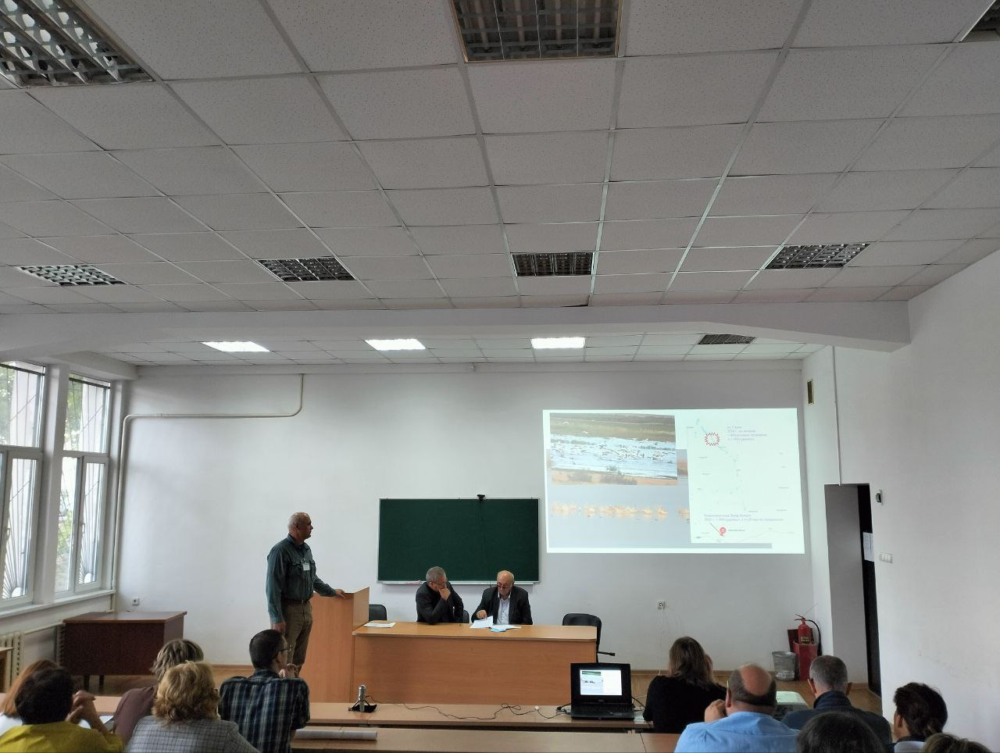
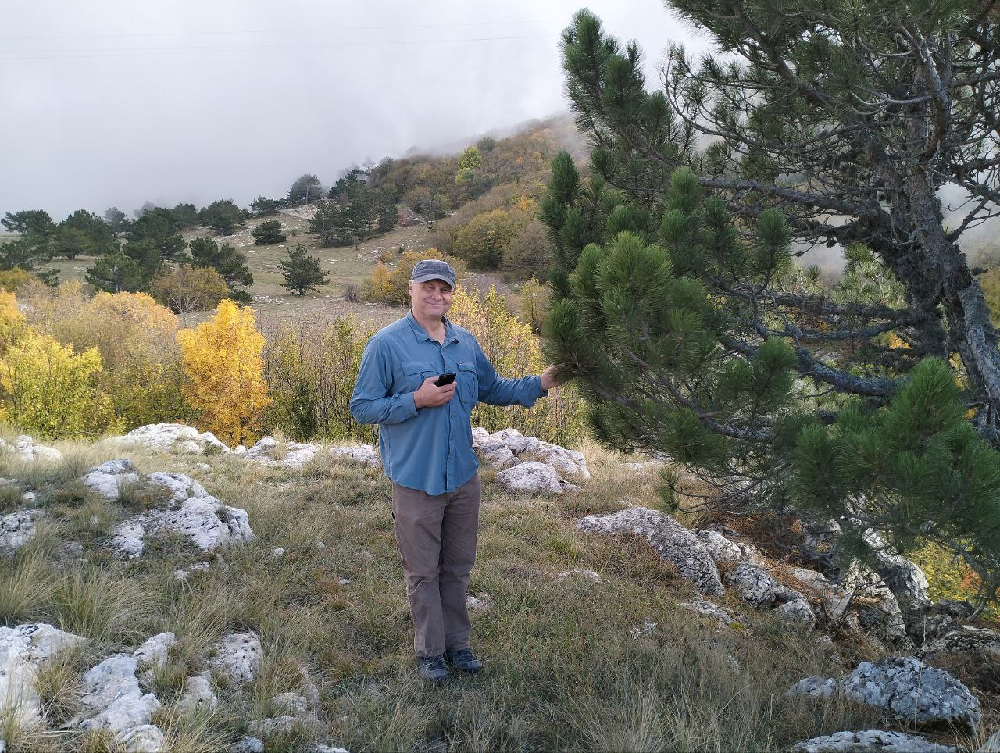
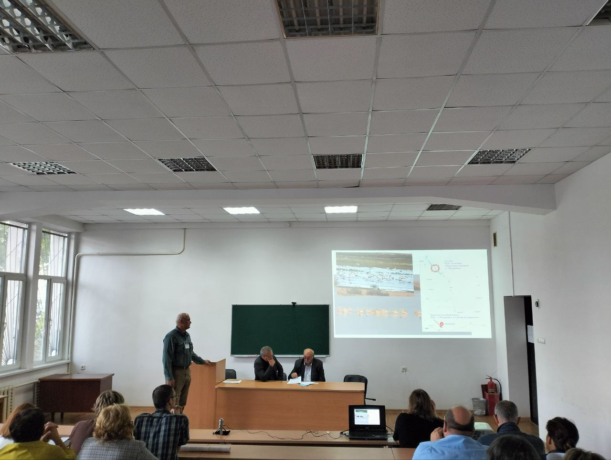
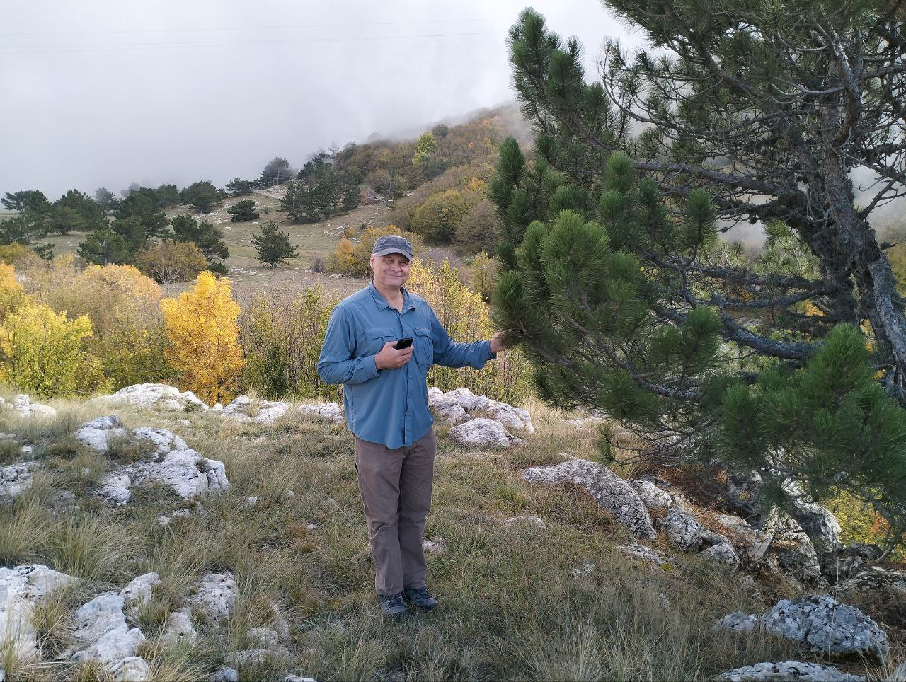
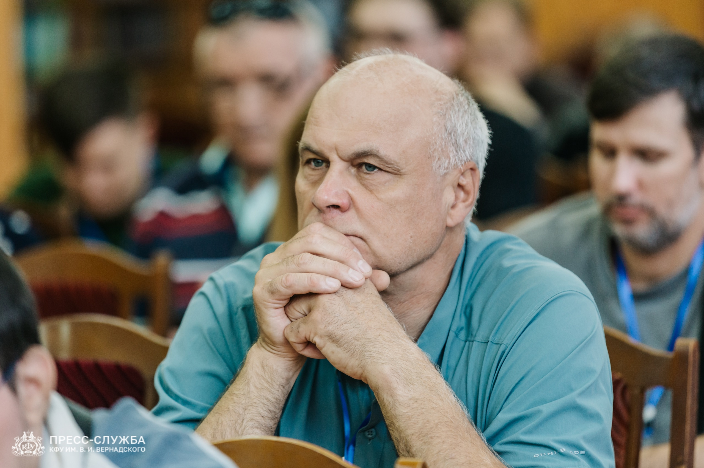
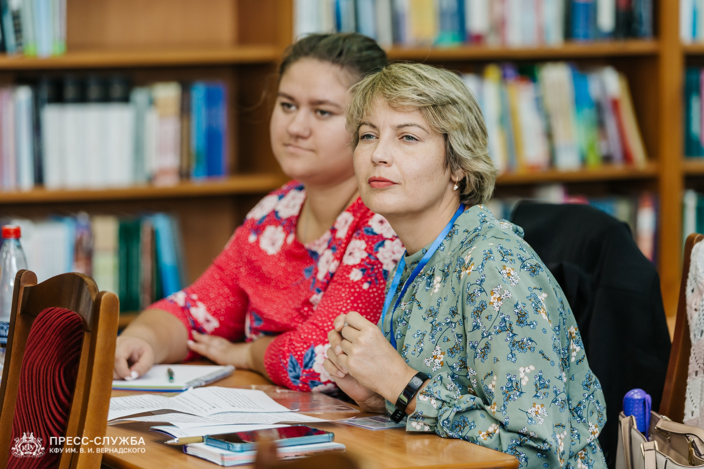
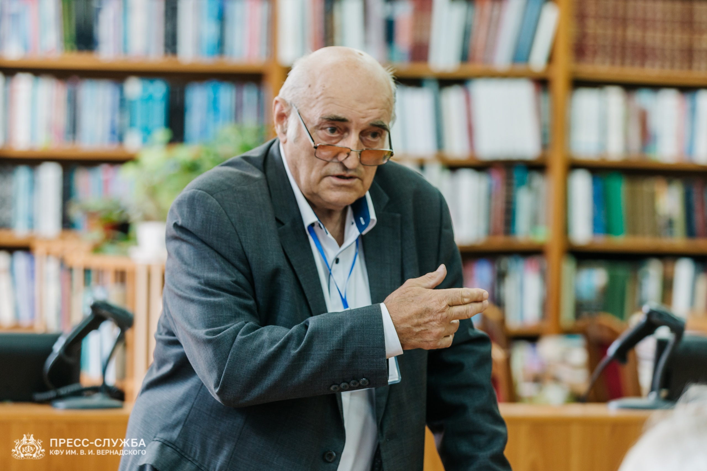
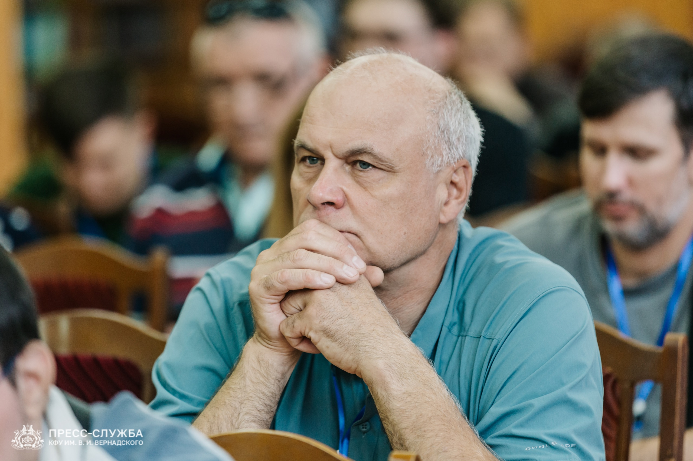
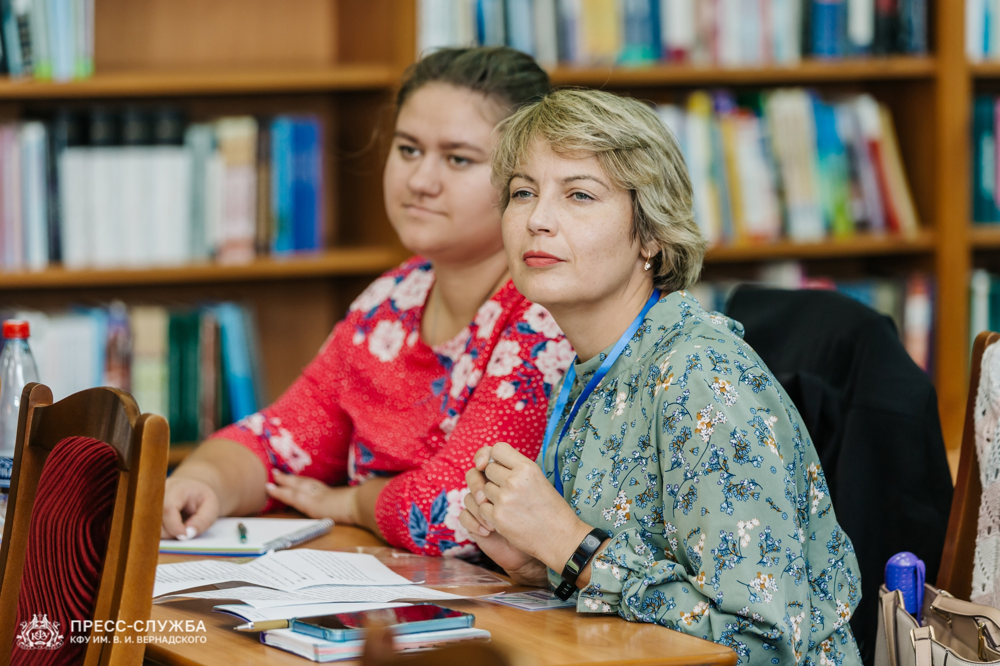
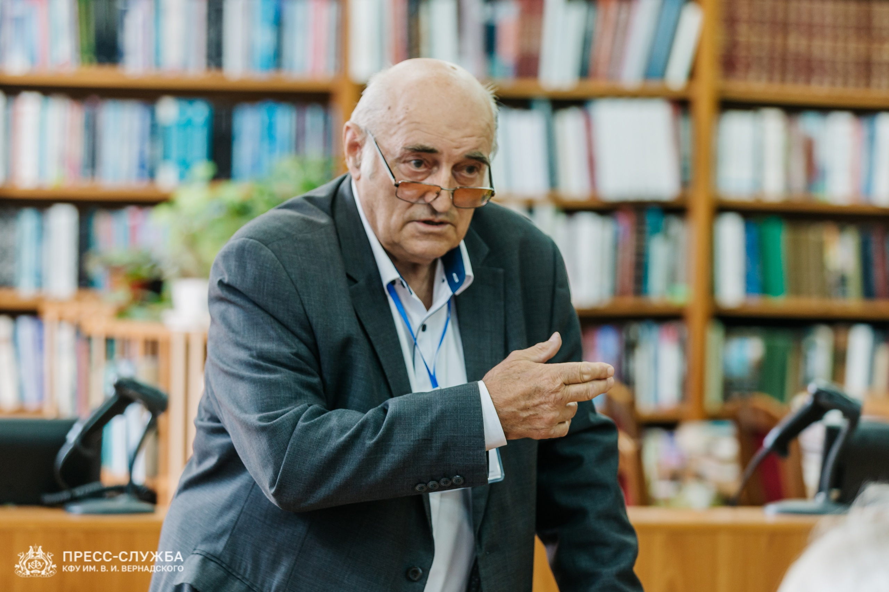

All-Russian Conference “Topical Issues in the Study and Conservation of Biological and Landscape Diversity in Southern Russia”
From October 8 to 11, 2014, the All-Russian Scientific and Practical Conference “Topical Issues in the Study and Conservation of Biological and Landscape Diversity in Southern Russia” was held in Simferopol at the V.I. Vernadsky Crimean Federal University (CFU). The conference was dedicated to the 90th anniversary of the birth of Crimean ornithologist Yuri V. Kostin.
The event featured plenary sessions and sectional poster presentations. The working language of the conference was Russian, and participants could join in-person, remotely, or online. Notably, no registration fee was required; the conference was organized solely on the enthusiasm of its organizers!
The conference materials (a collection of abstracts) are planned for electronic publication, and the most interesting works will be published in CFU’s journal Ecosystems.
The first day was dedicated to plenary presentations, followed by sectional sessions on:
- Plant biodiversity;
- Animal biodiversity;
- Biodiversity of the Caspian, Black, and Azov Seas;
- Landscape biodiversity.
Although the conference honored the 90th anniversary of Crimean ornithologist Yuri Kostin, a significant portion of the presentations focused on plants and the unique flora of the peninsula. This was fitting, as the Crimean botanical school has deep historical roots and worldwide recognition.
R.M. Anoshin, Scientific Secretary of the Moscow Zoo, Candidate of Biological Sciences, and coordinator of the EARAZA conservation program “Preservation of Dalmatian and Great White Pelicans,” presented a report titled “On the Current Status of Dalmatian and Great White Pelican Populations in the Manych Region.” The speaker discussed modern challenges facing these bird populations, the causes of these issues, and potential solutions.
After the conference concluded, participants were treated to an excursion to the Yalta Mountain-Forest Reserve.
Conference photos:

 



 




